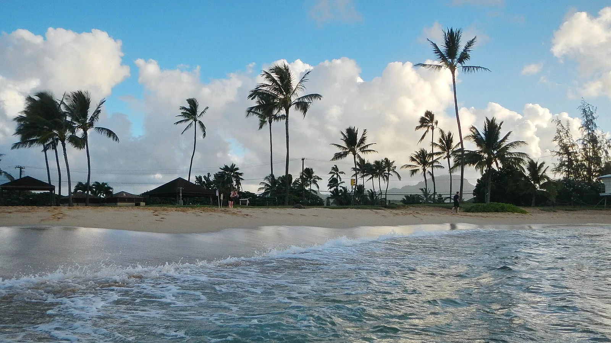

Poʻipū Beach Park
Kauaʻi, États-Unis · snorkeling, bodyboard, surf

Une plage du sud de Kauaʻi avec plusieurs secteurs de pratique. Les zones de snorkeling, de bodyboard et de surf demandent des choix distincts.
- Lieu
- Kauaʻi, États-Unis
- Niveau
- Variable selon les conditions
- Activités
- snorkeling, bodyboard, surf
- Type d'eau
- Mer / océan
- Coordonnées
- 21.87, -159.46 (position approximative du secteur)
Ouvrir dans Ocean Buddy Télécharger sur l'App Store
Source : Hawai‘i Tourism Authority.